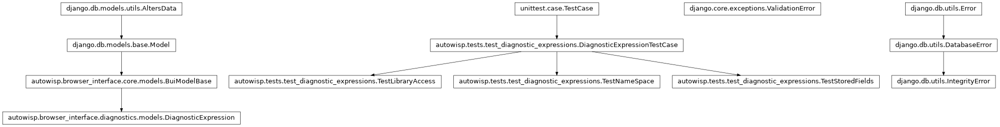
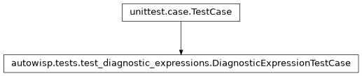
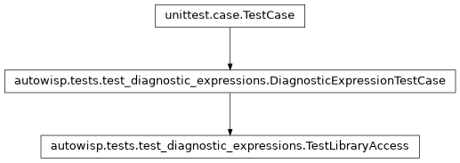
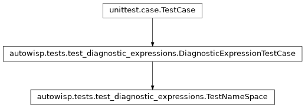
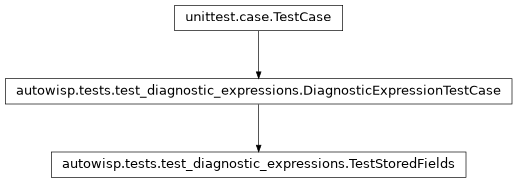

autowisp.tests.test_diagnostic_expressions module
Class Inheritance Diagram

Tests for stored diagnostic expressions.
Only what is specific to the model lives here. That it carries created
and modified, and that they are maintained however the row is written,
is covered once for every browser-interface model by test_bui_models.
- class autowisp.tests.test_diagnostic_expressions.DiagnosticExpressionTestCase(methodName='runTest')[source]
Bases:
TestCase
Base migrating the throwaway browser-interface database.
- class autowisp.tests.test_diagnostic_expressions.TestLibraryAccess(methodName='runTest')[source]
Bases:
DiagnosticExpressionTestCase
get_expressions– the whole of tier 3.What it produces is the
{name: expression}dictionary tiers 1 and 2 take as an argument, so these assert the shape of that hand-off rather than anything about expressions, which is tested where the rules live.- test_empty_library_is_a_dictionary()[source]
Not
None: the tiers below iterate it without checking.
- test_the_whole_library_regardless_of_what_resolves()[source]
Filtering by project would need a project, which tier 3 lacks.
An expression naming a diagnostic nothing has recorded is not an error; it is simply not offered where it cannot be drawn, and deciding that belongs to whoever holds the project’s names.
- class autowisp.tests.test_diagnostic_expressions.TestNameSpace(methodName='runTest')[source]
Bases:
DiagnosticExpressionTestCase
Names have to behave like the diagnostic names they sit beside.
- class autowisp.tests.test_diagnostic_expressions.TestStoredFields(methodName='runTest')[source]
Bases:
DiagnosticExpressionTestCase
What the model keeps, and what it deliberately does not check.
- test_unknown_names_are_not_rejected_here()[source]
The model stores text; resolving names is not its job.
An expression may legitimately reference diagnostics the open project has never recorded – it is then simply not offered there – so validating against a project database at this level would be wrong.